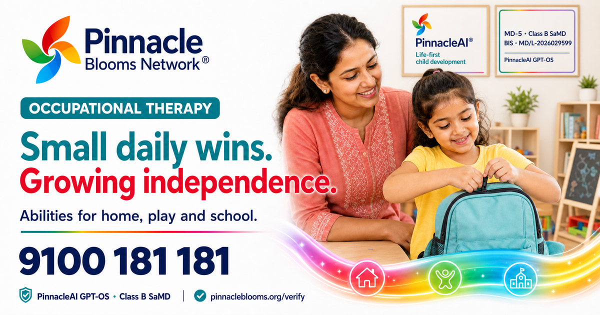
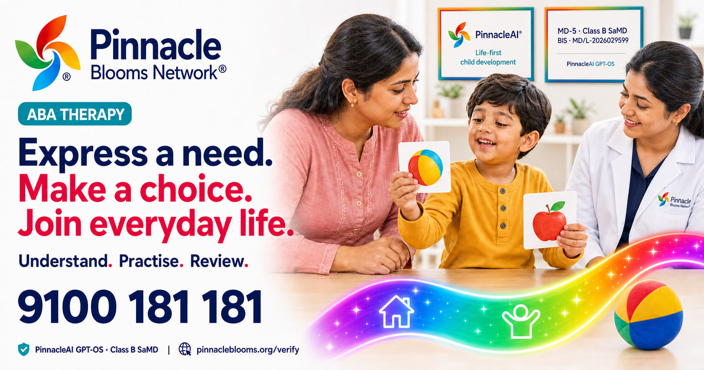
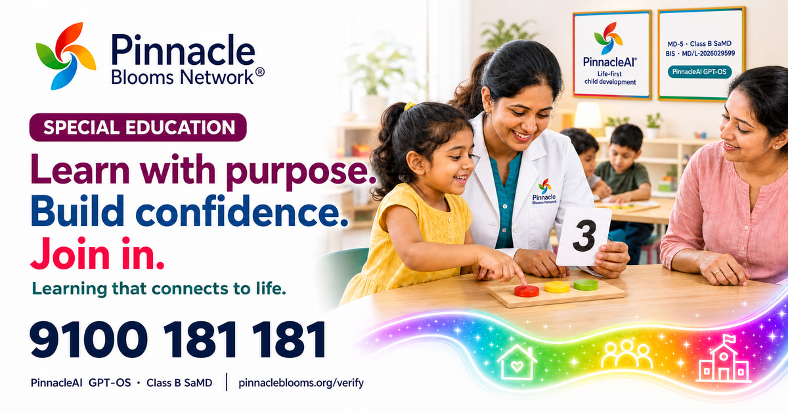
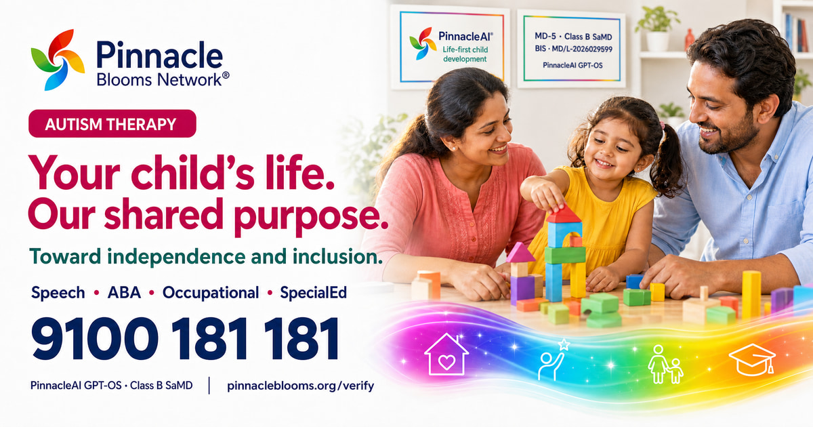
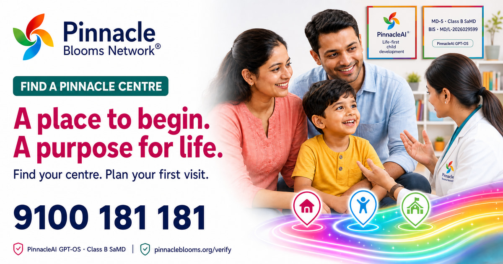

Occupational Therapy

Phone: 9100 181 181 · PinnacleAI GPT-OS · Class B SaMD · Verify
ABA Therapy

Phone: 9100 181 181 · PinnacleAI GPT-OS · Class B SaMD · Verify
Special Education

Phone: 9100 181 181 · PinnacleAI GPT-OS · Class B SaMD · Verify
Autism Therapy

Phone: 9100 181 181 · PinnacleAI GPT-OS · Class B SaMD · Verify
Find a Centre

Phone: 9100 181 181 · PinnacleAI GPT-OS · Class B SaMD · Verify